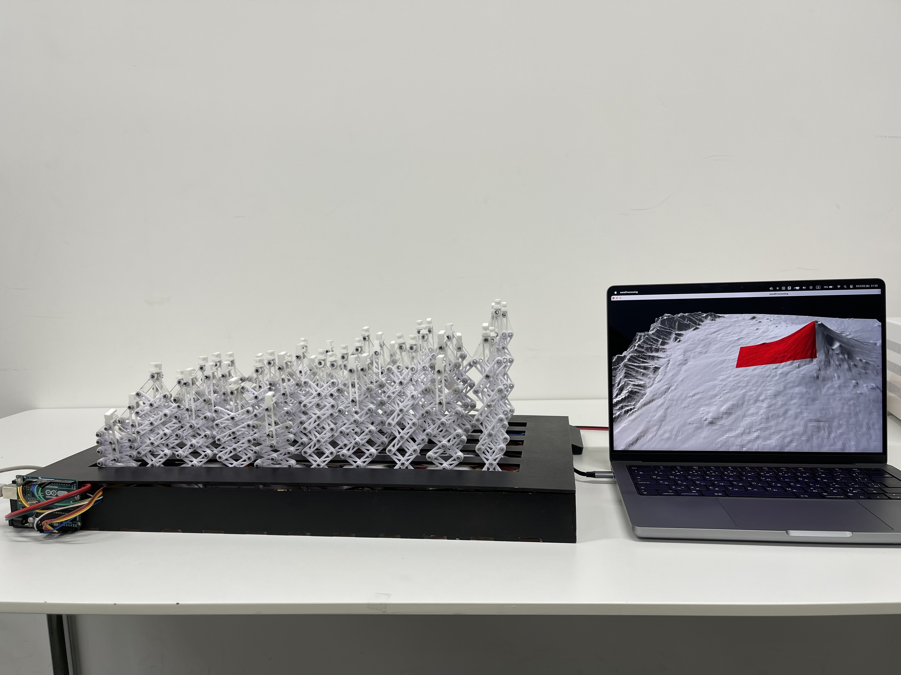
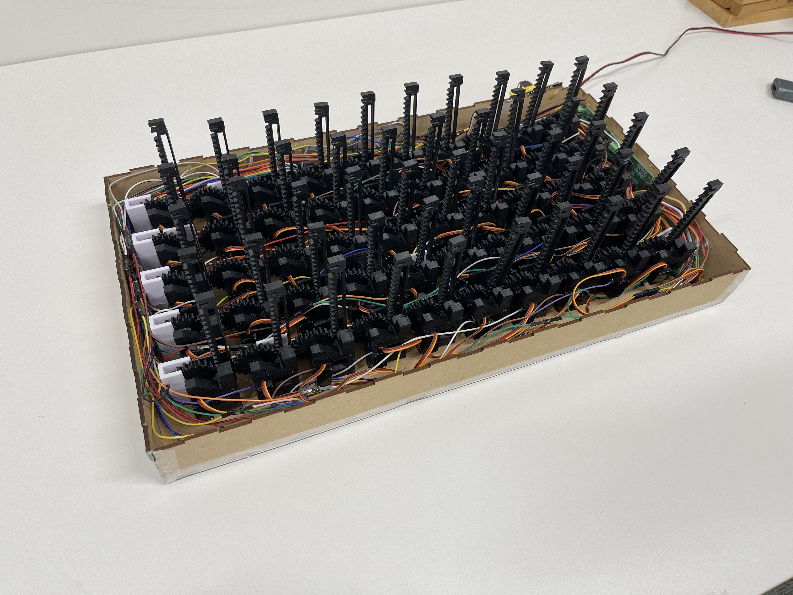

LiftableForm



- Arduino
- Processing
- サーボモータ
- PWM制御
- ラックアンドピニオン機構
- 多節リンク機構
- ピンディスプレイ
- 形状変化インターフェース
- 9軸IMUセンサ
- 3Dプリント
Liftable Formは，ユーザが手に持って操作できるピン型の形状変化インターフェースである。
従来のピン型形状変化ディスプレイは，机や床に固定して使用する据え置き型の構成が多く，ユーザがデバイス自体を持ち上げたり，対象物に押し当てたり，向きを変えたりする動作をインタラクションに取り込むことが難しかった。 形状変化インターフェースに可搬性を付与することで，デバイスを「持つ」「動かす」「回す」「対象物に押し当てる」といった身体的な操作を入力として扱うことを目指した。 Liftable Formは，5×10本のピンをサーボモータによって個別に制御し，物理的な凹凸形状として情報を提示する。ピンの高さは視覚的に確認できるだけでなく，手で触れることで触覚的にも知覚できる。
本研究では，2種類の機構を実装した。タイプAはラックアンドピニオン機構を用いたモデルであり，表裏2面に形状を提示できる構造を持つ。対象物にデバイスを押し当てることで形状を取得し，取得した形状を再びピンの凹凸として再現することができる。 タイプBは多節リンク機構を用いたモデルであり，大きなストロークを活かしたダイナミックな形状提示を行う。装置の方位を取得するセンサと組み合わせることで，デバイスの向きに応じて地形情報を切り替えるアプリケーションを実装した アプリケーション例として，対象物の形状を取得・再現する形状スキャン，物体の形に合わせて支持面を変化させる可変トレー，装置の向きに応じて表示範囲が変化する地形情報の立体表示を制作した。
展示では，来場者が実際にデバイスを手に取り，ピンの動きや形状提示を体験した。アンケートと観察を通して，動作速度や形状の認識しやすさについて良好な評価が得られた一方で，さらなる軽量化や構造の改善が今後の課題として明らかになった。
Liftable Formは，形状変化インターフェースを固定された表示装置としてではなく，ユーザの身体動作と結びついた可搬型のメディア装置として捉え直す試みである。

